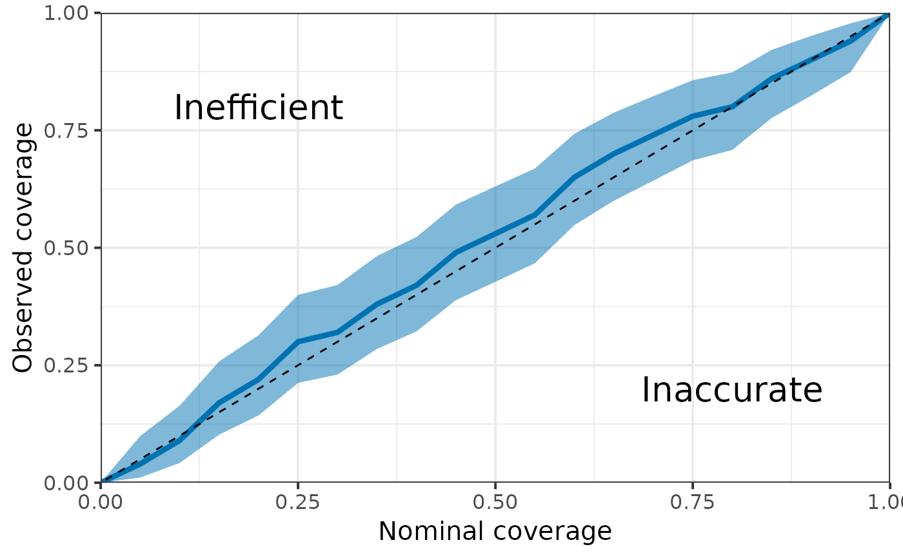

Compute and plot coverage of CI for different confidence level. Useful for fake data check.
compute_coverage( post_samples, truth, CI = seq(0, 1, 0.05), type = c("eti", "hdi") ) plot_coverage( post_samples, truth, CI = seq(0, 1, 0.05), type = c("eti", "hdi") )
| post_samples | Matrix of posterior samples. Rows represent a sample and columns represent variables. |
|---|---|
| truth | Vector of true parameter values (should be the same length as the number of columns in |
| CI | Vector of confidence levels. |
| type | Type of confidence intervals: either "eti" (equal-tailed intervals) or "hdi" (highest density intervals). |
compute_coverage returns a Dataframe containing coverage (and 95% uncertainty interval for the coverage) for different confidence level (nominal coverage).
plot_coverage returns a ggplot of the coverage as the function of the nominal coverage with 95% uncertainty interval.
N <- 100 N_post <- 1e3 truth <- rep(0, N) post_samples <- sapply(rnorm(N, 0, 1), function(x) {rnorm(N_post, x, 1)}) compute_coverage(post_samples, truth) #> # A tibble: 21 × 4 #> Nominal Coverage Lower Upper #> <dbl> <dbl> <dbl> <dbl> #> 1 0 0 0 0 #> 2 0.05 0.07 0.0286 0.139 #> 3 0.1 0.13 0.0711 0.212 #> 4 0.15 0.16 0.0943 0.247 #> 5 0.2 0.21 0.135 0.303 #> 6 0.25 0.29 0.204 0.389 #> 7 0.3 0.32 0.230 0.421 #> 8 0.35 0.36 0.266 0.462 #> 9 0.4 0.42 0.322 0.523 #> 10 0.45 0.48 0.379 0.582 #> # … with 11 more rows plot_coverage(post_samples, truth) 